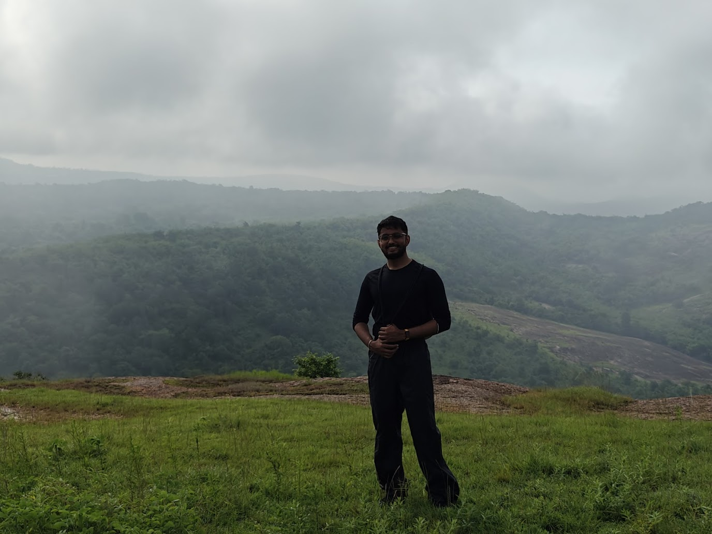

AI Systems Engineer taking video and multimodal AI from research to production. Specializing in perception-aware compression, VLM edge pipelines, and real-time inference optimization under strict resource budgets.

I am an AI Systems Engineer with 5+ years of experience taking video and multimodal AI systems from research to production, shipped to 1,000+ cameras across schools, banks, warehouses, and moving metro trains.
I specialize in solving AI problems under severe real-world constraints — limited network bandwidth, heterogeneous edge hardware, and strict latency budgets — by questioning conventional assumptions and redesigning systems around deployment reality rather than reaching for more compute.
At BLUE, this thinking produced a perception-aware video compression system for machine vision that cuts bitrate by a 40% median (up to 69%) beyond H.265 with under 1% impact on downstream detection accuracy — now running across 1,000+ production cameras and resulting in an arXiv publication and patent filing.
Foundational and modern deep learning models, multimodal reasoning, quantization, and agentic workflows.
Real-time video ingest, optical flow, decoding pipelines, and perception-aware compression architecture.
Maximizing throughput-per-watt and latency budgets on constrained GPU and ARM edge targets.
Robust production backends, containerized microservices, and system programming languages.
Architected a groundbreaking compression pipeline tuned for downstream machine vision rather than human eyeballs. Achieves 40% median (up to 69%) bitrate reduction beyond H.265 with <1% downstream detection impact across 1,000+ cameras on moving trains, banks, and warehouses.
Led AI engineering for a safety-critical real-time video understanding suite deployed across 100+ live cameras in US schools. Built multi-camera object detection, person re-ID, and ARM/NEON optimized pipelines.
Designed an automated restaurant order validation pipeline using Vision-Language Models on CCTV footage, reconciling physical tray items with POS transactions via structured reasoning and fuzzy matching.
Built a real-time ski technique coaching system from action camera footage for Sunrise, Huawei, and Swiss-Ski. Analyzes ski angles, posture, and technique on the edge; officially recognized by the Swiss-Ski federation.
Computer vision platform leveraging satellite and UAV imagery to detect, classify, and predict oceanic debris drift patterns for automated cleanup coordination.
Architected autonomous B2B lead acquisition agents processing 1,400 prospects/month (cutting manual effort by 90%) and agentic marketing workflows boosting CTR by 15%.
End-to-end Automatic License Plate Recognition system (YOLO detection + OCR) with hybrid CPU/GPU inference optimized for high-fps video streams on minimal hardware.
Designed and built an active-learning annotation environment to break manual labeling bottlenecks, drastically speeding up dataset curation and continuous model retraining loops.
Presents an optical-flow based compositor designed specifically for perception-aware surveillance encoding, removing temporal redundancy for machine vision consumers without sacrificing downstream detection accuracy.
Patent application covering the architecture, foreground-aware masking, and evaluation methodologies for compressing video streams optimized for AI detectors and VLMs.
Applied object detection models for automated severity classification of skin burns from medical imagery.
Europe's largest hackathon. Built YetiCoach (real-time sports CV for Sunrise, Huawei, Swiss-Ski).
Global winner with Project Aegir (satellite and UAV marine debris detection AI).
I am always interested in discussing technical challenges across AI systems architecture, edge video analytics, perception compression, and bringing frontier multimodal models to real-world deployment.
Based in Bengaluru, India · Open to technical leadership, consulting, and global collaboration.